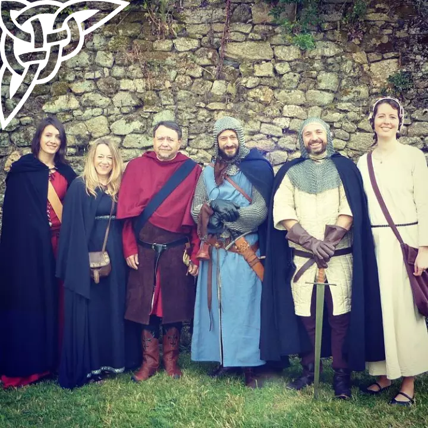

Plongez au cœur du moyen-âge et suivez les aventures burlesques de Paulin, Baldric, Loudier, Karadec et de leurs compagnons...
Le projet de l'association des fabliaux de Barrate est de réaliser une série humouristique médiévale auto-produite avec de l'imagination, beaucoup de bonne volonté et d'humour.
DECOUVRIR SUR YOUTUBEEn 2013, Nicolas Fraslin souhaite réaliser un album vidéo mettant en scène dans un univers médiéval les membres de sa famille, ses amis et collègues de travail pour avoir un souvenir de chacun, conservant une partie de leur personnalité, une expression du visage, un sourire, une intonation de voix...
Les premiers épisodes de la Cour de Barrate prennent vie et l'enthousiasme autour de ce beau projet se fait vite ressentir.
Photos de sean_photographie
NOTRE INSTAGRAMVous nous connaissez : pleins de projets en tête ! Pour tourner la suite du Secret des Rois , les Fabliaux de Barrate ont besoin d'acquérir une nouvelle caméra, la nôtre étant vieillissante et en mauvaise santé... Notre choix s'est porté sur le Panasonic Gh5 pour la qualité d'image vidéo et un objectif pour commencer (le Sigma 18-35 avec sa bague d'adaptation Metabones)